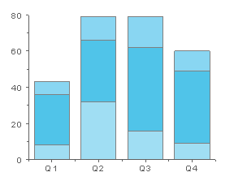
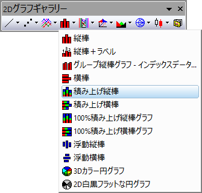

積み上げ縦棒グラフ
積み上げ縦棒グラフ
- 
要求されるデータ
少なくとも1つのY列、あるいは、その部分領域を選択する必要があります。 関連付けられたX列がある場合はそれを使用し、そうでない場合は、Y列または行番号のサンプリング間隔が使用されます。
グラフ作成
データを選択します。
メニューからを選択します。
または、
2Dグラフギャラリー ツールバーの積み上げ縦棒ボタンをクリックします。
- 
テンプレート
COLUMN.OTP (Originのプログラムフォルダにインストールされています。)
ノート
- 各X値について、対応するY値が棒の高さとして積み上げられます。 各棒には固定の幅がります 縦棒グラフはお互いに積み上げられているので、2番目の棒は1番目の棒が終わったところから始まります。棒グラフの積み上げは対応するX値ごとに行われます。 棒グラフの積み上げを解除するにはと選択します。
- また、Y=0 の(厚さ0の) 棒を表示するには、｢オプション ｣ダイアログ ()のグラフタブで棒グラフの場合に 0値を表示するのオプションを指定しておきます。